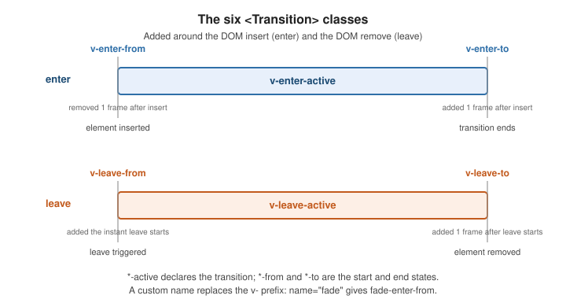

Transitions and Animation
|
This content was generated with the assistance of AI and should be verified against the official documentation before being relied on in production. |
<Transition> and <TransitionGroup> are built-in components that apply enter, leave, and move animations
when content is added, removed, or reordered. They add and remove a small set of CSS classes around the DOM
change; you supply the actual animation in CSS, or take over completely with JavaScript hooks.
<Transition>
Wrap a single element or component and Vue animates it whenever it is toggled by v-if, shown by v-show,
or swapped through a dynamic :is:
<script setup>
import { ref } from 'vue'
const show = ref(true)
</script>
<template>
<button @click="show = !show">toggle</button>
<Transition>
<p v-if="show">Hello</p>
</Transition>
</template>
<style>
.v-enter-active,
.v-leave-active {
transition: opacity 0.3s ease;
}
.v-enter-from,
.v-leave-to {
opacity: 0;
}
</style>See <Transition>.
The six classes

| Class | Applied |
|---|---|
|
starting state of enter; added before insert, removed one frame after |
|
present for the whole enter; declare |
|
ending state of enter; added one frame after insert, removed when the transition ends |
|
starting state of leave; added the instant a leave is triggered |
|
present for the whole leave |
|
ending state of leave; added one frame after leave starts |
The v- prefix is the default. With name, it is replaced: <Transition name="fade"> produces
fade-enter-from, fade-enter-active, and so on.
Custom class names
Provide each class explicitly — required to plug in an external animation library such as Animate.css:
<Transition
enter-active-class="animate__animated animate__fadeInDown"
leave-active-class="animate__animated animate__fadeOutUp"
>
<p v-if="show">Hello</p>
</Transition>mode
By default the entering and leaving elements are present at the same time. mode="out-in" waits for the old
element to finish leaving before the new one enters (the usual choice for swaps); mode="in-out" is the
reverse:
<Transition name="slide" mode="out-in">
<component :is="currentTab" />
</Transition>appear
Add appear to also play the enter transition on the component’s initial render:
<Transition appear>
<p>fades in on first paint</p>
</Transition>Between elements and dynamic components
One <Transition> can animate a swap between two elements as long as only one is shown at a time; give each
a distinct key when they use the same tag. Dynamic components via :is behave the same way:
<Transition name="slide" mode="out-in">
<span :key="status">{{ status }}</span>
</Transition>JavaScript hooks
For spring physics or anything CSS cannot express, listen to the lifecycle events and disable CSS class
detection with :css="false":
<script setup>
function onEnter(el, done) {
el.style.opacity = 0
requestAnimationFrame(() => {
el.style.transition = 'opacity 0.4s ease'
el.style.opacity = 1
})
el.addEventListener('transitionend', done, { once: true })
}
function onLeave(el, done) {
el.style.opacity = 0
el.addEventListener('transitionend', done, { once: true })
}
</script>
<template>
<Transition :css="false" @enter="onEnter" @leave="onLeave">
<p v-if="show">Hello</p>
</Transition>
</template>The full set is @before-enter, @enter, @after-enter, @enter-cancelled, and the matching
@before-leave, @leave, @after-leave, @leave-cancelled. With :css="false", calling the done
callback in @enter / @leave is what tells Vue the animation has finished.
The hooks fire in a fixed order, and the second callback argument decides when the transition counts as finished:
set the start state"] --> en["enter(el, done)
start the animation"] en -->|"done() called,
or CSS transition ends"| ae["after-enter(el)
clean up"] en -.->|"toggled back
mid-way"| ec["enter-cancelled(el)"]
The leave hooks mirror this (before-leave, leave, after-leave, leave-cancelled); Vue removes the element
from the DOM only after leave has called done.
Controlling the timing
By default Vue ends a transition when the first transitionend or animationend event fires on the root
element. Two props adjust that:
-
:duration="500"(or{ enter: 500, leave: 800 }) sets the duration in milliseconds explicitly, for nested transitions where an inner animation outlasts the outer element’s own. -
type="animation"ortype="transition"tells Vue which kind of event to wait for when an element has both a CSS transition and a CSS animation.
<TransitionGroup>
Animates insertion, removal, and reordering of a list. Unlike <Transition> it can render a real wrapper
element (pass tag), ignores mode, and requires a key on every child:
<script setup>
import { ref } from 'vue'
const items = ref([1, 2, 3, 4, 5])
function shuffle() {
items.value = [...items.value].sort(() => Math.random() - 0.5)
}
</script>
<template>
<button @click="shuffle">shuffle</button>
<TransitionGroup name="list" tag="ul">
<li v-for="item in items" :key="item">{{ item }}</li>
</TransitionGroup>
</template>.list-enter-from,
.list-leave-to {
opacity: 0;
transform: translateX(30px);
}
.list-enter-active,
.list-leave-active {
transition: all 0.4s ease;
}
/* items gliding to a new position */
.list-move {
transition: transform 0.4s ease;
}
/* pull leaving items out of flow so siblings can move into the gap */
.list-leave-active {
position: absolute;
}See <TransitionGroup>.
Move transitions (FLIP)
The v-move class — list-move above — is applied to items whose position changed. Vue animates them
with the FLIP technique: it records each item’s old and new box, applies an inverting transform so the
item appears not to have moved, then transitions that transform to zero. Give leaving items
position: absolute so the remaining items can animate into the freed space.
Staggering
Drive a per-item delay from a data attribute inside a JavaScript hook, using a timeline library such as GSAP:
<script setup>
import gsap from 'gsap'
function onEnter(el, done) {
gsap.to(el, {
opacity: 1,
y: 0,
delay: el.dataset.index * 0.05,
onComplete: done
})
}
</script>
<template>
<TransitionGroup :css="false" tag="ul" @enter="onEnter">
<li
v-for="(item, i) in items"
:key="item.id"
:data-index="i"
style="opacity: 0"
>{{ item.text }}</li>
</TransitionGroup>
</template>Animation without the transition components
The transition components only help around insert, remove, and reorder. Everything else is plain reactivity. Animation Techniques covers four approaches:
Class and style bindings. Bind a class or an inline style to state and let CSS transition it:
<template>
<div
class="box"
:class="{ active }"
:style="{ transform: `translateX(${x}px)` }"
/>
</template>
<style>
.box { transition: transform 0.3s ease, background-color 0.3s ease; }
.box.active { background-color: teal; }
</style>Watchers driving imperative animation. Watch a value and call an animation library in the callback:
import { ref, watch } from 'vue'
import gsap from 'gsap'
const count = ref(0)
watch(count, (n, old) => {
gsap.fromTo('.counter',
{ innerText: old },
{ innerText: n, duration: 0.5, snap: { innerText: 1 } }
)
})State-driven tweening. Keep a separate "displayed" ref, animate it toward the real value, and render the displayed one — the standard approach for animated numbers and morphing SVG paths.
GSAP and friends. The guide uses GSAP; the same shape works with the Web Animations
API or @vueuse/motion. Reach for these when CSS transitions cannot express the motion — spring physics,
path morphing, sequenced timelines.
The styles above are plain CSS; with a utility framework the class bindings are written the same way — see Tailwind Reference.
Worked example: animating the task list
The running example is a task list. Adding a task slides it in, removing one fades it out, and reversing the
order glides each row to its new position. <TransitionGroup> does all three; the CSS supplies the motion:
<script setup lang="ts">
import { ref } from 'vue'
interface Task { id: number; title: string }
const tasks = ref<Task[]>([
{ id: 1, title: 'Write docs' },
{ id: 2, title: 'Run tests' },
])
let nextId = 3
function add() { tasks.value.unshift({ id: nextId, title: `Task ${nextId++}` }) }
function remove(id: number) { tasks.value = tasks.value.filter(t => t.id !== id) }
function reverse() { tasks.value = [...tasks.value].reverse() }
</script>
<template>
<button @click="add">Add</button>
<button @click="reverse">Reverse</button>
<TransitionGroup name="task" tag="ul">
<li v-for="t in tasks" :key="t.id">
{{ t.title }} <button @click="remove(t.id)">x</button>
</li>
</TransitionGroup>
</template>
<style>
.task-enter-active,
.task-leave-active,
.task-move {
transition: opacity 0.3s ease, transform 0.3s ease;
}
.task-enter-from {
opacity: 0;
transform: translateY(-12px);
}
.task-leave-to {
opacity: 0;
transform: translateX(24px);
}
.task-leave-active {
position: absolute; /* lets the siblings move into the gap */
}
@media (prefers-reduced-motion: reduce) {
.task-enter-active,
.task-leave-active,
.task-move {
transition: none;
}
}
</style>Each part of the behaviour has one cause:
-
:key="t.id"is what lets Vue tell which row was added, removed or moved. Keyed by index, reversing the list would look like every row changing its text. -
.task-enter-fromand.task-leave-todescribe the invisible end of each animation, and the*-activeclasses carry thetransitiondeclaration, so one rule covers enter and leave. -
.task-moveanimates the rows that merely changed position, using the FLIP technique described above;position: absoluteon the leaving row removes it from the layout so the rows below move up while it fades. -
The
prefers-reduced-motionquery switches the transitions off for people who ask their system for less motion. Vue still adds and removes the elements, just without animation.
Only opacity and transform are animated. Both are handled by the compositor without relayout, so the
animation stays smooth; animating height, top or margin forces layout on every frame.
What the classes look like at runtime
Under jsdom (which has no layout and no CSS transitions) the lifecycle can still be observed, because Vue adds
the classes before it waits for the end of the transition. With an unstubbed <Transition name="fade"> around a
v-if paragraph, flipping the condition and reading the element’s class names gives:
right after insert: fade-enter-from fade-enter-active
two frames later: (no classes)On a real page the second line shows fade-enter-active fade-enter-to for as long as the CSS transition runs.
jsdom finds no transition duration, so Vue treats the transition as already over and cleans up at once.
Testing animated components
Vue Test Utils replaces <Transition> and <TransitionGroup> with stubs by default, so a test sees the final
DOM without waiting for animation. That is what most tests want; assert on the content, not on the motion. To
test JavaScript hooks, un-stub the components with global.stubs and use fake timers:
import { it, expect, vi } from 'vitest'
import { mount } from '@vue/test-utils'
import { nextTick } from 'vue'
import AnimatedTasks from '@/components/AnimatedTasks.vue' // logs its hook calls into `log`
it('fires the enter hooks in order for an added task', async () => {
vi.useFakeTimers()
const wrapper = mount(AnimatedTasks, {
global: { stubs: { transition: false, TransitionGroup: false } },
})
await wrapper.get('[data-test="add"]').trigger('click')
vi.advanceTimersByTime(5) // the component's enter hook calls done() from a timer
await nextTick()
expect((wrapper.vm as unknown as { log: string[] }).log)
.toEqual(['before-enter', 'enter', 'after-enter'])
vi.useRealTimers()
})The component for this test is the list above with :css="false" and @before-enter, @enter (calling
done from a setTimeout) and @after-enter handlers that push into a log ref exposed with defineExpose.
Real visual behaviour — that the row really slides — belongs in an end-to-end test in a browser (see
Testing).
Page and route transitions
Wrap <RouterView> in a <Transition> using the view’s slot form, so one wrapper covers every route
component:
<template>
<RouterView v-slot="{ Component, route }">
<Transition :name="route.meta.transition || 'fade'" mode="out-in">
<component :is="Component" :key="route.path" />
</Transition>
</RouterView>
</template>Per-route names come from each route’s meta. See Routing for meta and the router
setup, and Route Transitions for the
scroll-position and nested-route caveats.
See also
-
KeepAlive, Teleport, and Suspense —
<Transition>composed with<KeepAlive>for cached tab views, and teleported modals that animate in and out. -
Routing — route
meta, named views, and navigation guards. -
Tailwind Reference — utility classes for the state-driven
:classbindings shown here.